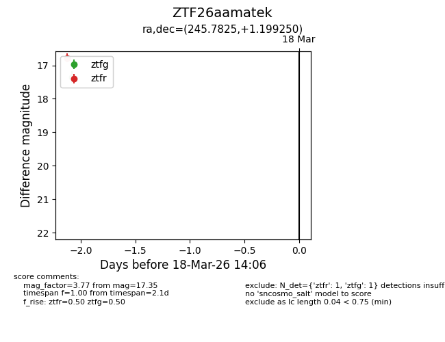
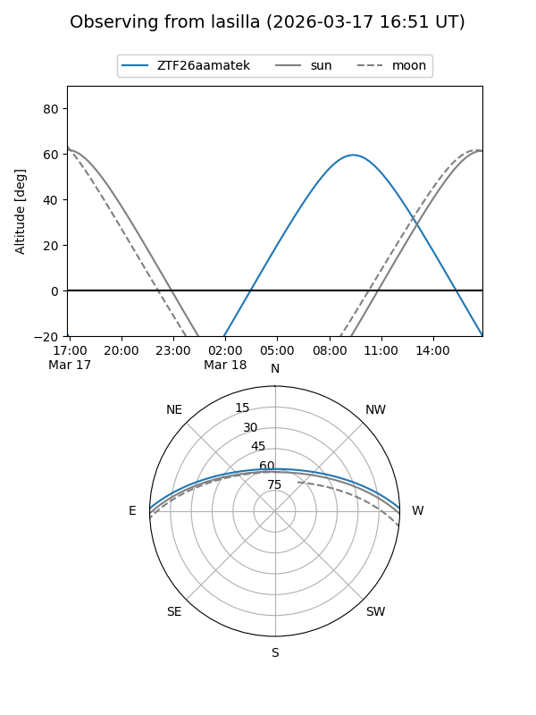
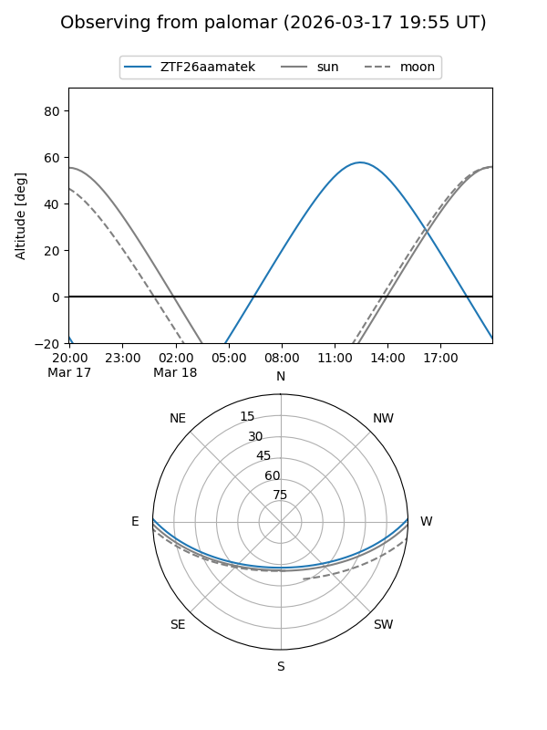

ZTF26aamatek
Target ZTF26aamatek at 2026-03-18 14:08
Aliases and brokers:
FINK: link
Lasair: link
ALeRCE: link
alt names
ZTF26aamatek (ztf,fink_ztf)
Coordinates:
equatorial (ra, dec) = 245.7825,+1.19925
equatorial (HMS+DMS) = 16:23:07.81,+01:11:57.30
galactic (l, b) = (15.1240,+33.09222)
Flags:
Photometry:
last ztfg=17.35, ztfr=16.78
1 ztfg, 1 ztfr detections
Lightcurve

Visibility


Additional plots